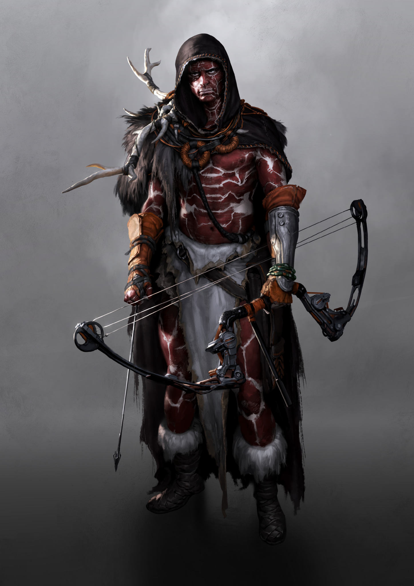

Compound Bow
- Effect
- Distance 20/80, Damage 8+F/2, Mag. 1, Slots 2
- Encumbrance
- 1
- Tech Level
- V
- Value
- 5000
- Resources
- 3
CLAN DOSSIER
There were 216 Druids left. And there could never be more.
Clans of the Frontier pp. 17–19

SELECTION BIAS
The drones lay dead and the Pheromancer had taken three arrows to its ugly head before he collapsed against a fallen tree. The tiny refugee track was breathless, huddled together, terrified by the menace they had all just survived. They stared at the nearby treeline, watching as the three strangers peeled themselves from the underbrush, camouflaged with strange patterns painted across their bodies and carrying bows of unknown origin. They went on to collect all their arrows in silence, paying no attention to the people whose lives they had just saved. The refugee leader wanted to raise his voice to thank them, but one of the strangers shushed him. “Stay quiet, if you want to live! No sound until we make it across the great bog! Follow us!"
People grow old and pass on, plants wither and die, animals find their place in the circle of life, everything changes. Everything except Cernunnos, the Horned God. The Druids know that he is the one universal constant, the one entity that has been and will always be present. In the beginning he gathered the Druids around himself, and since then has cared for and nurtured them, silently passing down lessons through diagrams that glittered in the sky or appeared on the surface of rocks. The Druids learned from their God, and carried out his instructions.
Even if the divinity of the Horned God is evident, that doesn’t mean the Druids can be complacent and simply cast their woes into his arms, regressing into a defenseless, babbling tribe of savages. The whims of Cernunnos are unforeseeable, and as such the Druids must maintain their own independence, heed their own senses, and gather their own resources. If they failed to prove themselves worthy of their Creator, why would he grace them with his presence? They provide offerings to their God of the biomaterials needed to keep his heart burning strong and prevent him from having to return to his eternal slumber, and they uphold the laws of his foundation; no animal should ever be harmed within the Forest of Cernunnos. Instead, the Druids live entirely off the land, foraging whatever they need to survive and not a single speck more.
It began as just a symbol flashing up in the images their God drew in the air, a set of numerals with no connection to reality. Their numbers were small, in those days, and so they paid it no mind. But as their ranks began to slowly grow, the warnings grew more insistent, the foreboding symbol appeared scratched into the bark of trees or scorched into the soil with mystic light. Still, it went unnoticed. Everything changed when the Limit was first broken. Saoirse gave birth to a pair of twins, two boys whose cries brought the entire Clan together to rejoice in the creation of new life.
Then Cernunnos arrived. He moved silently, gently stepping through the gathered Druids who fell mute in his wake. He approached the new births, reached out with his iron grip, and lifted one of the children into his arms. The boy stopped his wailing, even as his brother’s screams redoubled in intensity. The God left, and the child was never seen again. The Conductors counted the remaining assembly and realised the finality of the symbols. There were 216 Druids left. And there could never be more.
When the large city of mankind to the south of their Forest ceased to exist, and a glowing cloud surged toward the sky, the Druids felt that something extraordinary had happened. Cernunnos instantly reacted, his optical sensors fixed on the lands of the Chroniclers, and a wave of tension filled the air. The Clan understood that the holy balance had been shattered. Cernunnos left the next day.
It took less than a week for the invaders to make their presence known. A single Expatriate with its polity pushing into Druid territory. The Pheromancer was quickly eradicated, but at the cost of three Solenoids. More will be coming, and the Druids lack the numbers to sustain any sort of conflict of attrition. They must hold out until their God returns, or find another source of aid.
The Druids are forced to step outside of their sacred borders for the first time to find new allies, as the encroaching Pheromancers mandate an unprecedented response. They propose an uneasy exchange to the stranded refugees Briton, spoken in whispered tones in remote meeting spots. Offerings of technical equipment or valuables in return for guiding them through the Gauntlet, goods which the Druids can then use to barter for aid with the Britoni. For the masses of displaced Frankans looking for a path to safety, it’s an easy price to pay.
THE CLAN
Select any rank to read its prerequisites, effect, and equipment.
THE HORNED GOD
TOOLS OF THE GODS
Clans of the Frontier p. 25
While the Scrappers scrounging through the dirt around Nantes foolishly claim the body paint adorning the Druids is merely that, tribal paint, the truth is far more complex. Formulated using specific compounds and in patterns precisely demonstrated by Cernunnos, the paint of the Druids is capable of fooling video recording devices – such as the eyes of AMSUMOs, the optical sensors of Reset drones, and the cameras of Chronicler surveillance equipment. Instead of a Clanner stalking through the woods, their feeds deteriorate into a meaningless blur of impossible contrasts and out-of-focus smears.
The bulbous, rounded heads of these arrows bely their true purpose - non-lethal deterrence. It would be impossible to deal a serious wound with these weapons, but for the Druids using them, that’s just fine. Contained within the frame is a powerful siren, activated by the rush of air passing through when the arrow is shot, creating a high pitched alarm and warning all animals in a 1 kilometer radius of the presence of an intruder. The Shrieker causes (5) Ego Damage to the target even if it doesn’t directly impact them. They should get the message, either way - they are not welcome here.
When fired, Starling arrows split into a multitude of small, glittering probes which can chart their own path through the air using tiny jets. Each plots out an individual trajectory towards its target, capable of accommodating for all but the most rapid attempts to dodge away from the swarm. On impact, the Starlings slice through their target with lethal precision. The arrows are exceedingly hard to create, and only given to Cernunnos’ most trusted and prized followers.
An arrowhead which contains a set of advanced signal generators. When fired, they analyse the soundscape around them and create opposing waveforms to silence any sound through destructive interference. Anyone caught nearby is suddenly trapped in a world without any sound and disoriented, causing a penalty of -1D to all Actions. The Whispertip’s field has a radius of 5 meters, and lasts for (4) Rounds before its capacitors run dry, long enough for a Solenoid to close in and ensure that the silence is permanent.